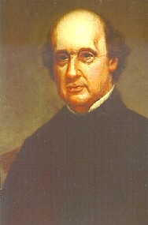

|
Most people would be surprised to learn that much of what we believe we know about early America comes to us, not from direct contact with original historical resources, but from things written, drawn, painted, adapted, and reproduced at some time after the actual historic event. Historical observations, memoirs, transcriptions, adaptations, and artwork are readily encountered on the historical landscape. Today, we are more likely to see them than an authentic "ancient" document, record, map, or painting.
Some of those re-creations are based on the memories of actual observers; others on substantial historical research; others are more purely creative. A significant number of those "after-the-fact," so-called "historical resources" first appeared during the last half of the nineteenth century - during the Victorian Age. The most engaging and popular of these re-created resources fall under the general rubric of historical artwork. With the popularization of printing during the nineteenth century, many existing and also newly created paintings and drawings were adapted and printed in books and tabloids that were viewed by unprecedented numbers of people. Thus, "the past" came to most Americans in a "new" print or lithograph that represented an earlier time in history. However, Victorian era images were sanitized and romanticized to make life in early America appear neater and simpler - a comforting contrast to the unsettling impact of widespread immigration and an industrializing nation in the years before and after the Civil War. Disseminated widely in prints and lithographs, then and now, they have enjoyed widespread appeal. Albany has been blessed with many interpreters of its historical tradition. James Eights was Albany's outstanding nineteenth century interpreter of the  community's pre-industrial past. Creative and multi-talented, Eights not only wrote and published memoirs of the Albany of his youth, but he was a gifted artist who also left us with dozens of beautiful watercolors and other renderings of the pre-industrial city. Eights possessed a remarkable memory but apparently conducted considerable research on the shape of the city of his childhood. Based on comparative research, the Colonial Albany Project has found that Eights's historical recreations were startlingly accurate as the buildings and street scenes are consistent with manuscript maps, written sources, and later photographs. Historical
interpreters for more than a hundred years have more than a little justification for basing their representations of Albany past on the work of James Eights. But even more exciting for the Colonial Albany Social History Project, Eights also remembered some of the "real" people who were city fixtures during his childhood. We believe that the figures he painted in his Albany streetscapes represented actual historical characters of the early nineteenth century. Dinnah Jackson - pictured in front of her home on lower Maiden Lane; Baltus Lydius - perched in the window of his landmark home on the corner of State and Pearl streets; old Goldsbrow Banyar walking with his servant on North Pearl Street; and John W. Wendell - in the doorway of his hat shop on Court Street are outstanding examples of his characterizations. Massachusetts-born Joel Munsell (1808-80) was the first great Albany antiquarian. Settling in Albany in 1827, this Yankee printer turned publisher and businessman began to collect historical clippings, documents, and maps and also encouraged long-time residents to write down and sketch their memories of earlier times. Of the dozens of local contacts he initiated, his liaisons with
businessman/directory publisher Joseph Fry, librarian/translator Jonathan Pearson, and scientist/artist James Eights would have long term significance.
Munsell nurtured and prodded his neighbors' recollections into manuscripts
and views. Apparently, he took great care to have them reconciled
with the community's actual historical record. He also engaged lithographers and other printmakers to transform descriptions and sketches into more formal portraits, maps, and views that could be utilized to illustrate
and decorate his publications. An avid collector of Americana
since childhood, by the 1840s Joel Munsell had accumulated a large and
wide-ranging archive of materials related to the history of his new home.
At that time, he began to print selections from his historical collection
- first in almanacs and historical calendars, then in other more
miscellaneous publications, and later in two multi-volume compendiums of
historical information and art called The Annals of Albany and the Collections on the History of Albany. Over the course of a long career as collector, compiler, editor, and antiquarian printer, Joel Munsell was
responsible for the publication of hundreds works on Albany history.
Today, Munsell's publications representing the core of Albany's historical
legacy, have remained remarkably accessible in a number of forms, and have
been of inestimable value to the Colonial Albany
Social History Project in its efforts to reconstruct the early Albany
community from the bottom-up. Because of their accessibility and
visual clarity, Munsell-inspired maps, portraits, and views are utilized
by the Colonial Albany Project on this website and in all project programs.
However, despite their obvious value, we must continually be aware that
they are highly selective re-creations, not authentic pre-industrial resources despite their sometimes very credible appearance. Like most antiquarian works, the images presented by Joel Munsell made the past appear attractive to viewers/potential patrons by idealizing the best of antiquity, neutralizing the more mundane and commonplace scenes and situations, and avoiding (sometimes even romanticizing) poverty, suffering, and other more gruesome aspects of real life. In retrospect, such romantic representations make us look back on what, in reality, was a very difficult existence with fondness and even longing as "the good old days." At the same time, the bucolic nature of life presented by Munsell and other antiquarians stands in stark contrast to the arduous existence emerging from the research conducted by the Colonial Albany Project. Mostly during the early twentieth century, Scottish newcomer David C. Lithgow produced a number of historical renderings of Albany's past. His best known (but not exclusive) medium was the historical mural. These focused on major and popular events/incidents in the community's past. His work was more fanciful than the art of most of those working before and after him but has been and continues to be seen today chiefly because it is the only recreation of a dramatic Albany event.
Admittedly, the Colonial Albany Project has succumbed to the lure of antiquarian art as these images have permitted us to visually interpret the lives of people who
would not have been in a position to commission a portrait, whose homes were
simply replaced, and who have left behind little literary evidence of their
early Albany lives. Corroborated by wide-ranging historical research
- that also often was basic to their creation, creditable historical artwork
represents a powerful resource for understanding and interpreting the early
Albany story. Every part of this website owes a great deal to James
Eights, Joel Munsell, Len Tantillo, and other visual arts historians - all of whom are acknowledged throughout. notes Painting showing the intersection of State and Pearl Streets by David Lithgow in the collection of the Albany Institute of History and Art. It was adapted from a watercolor by James Eights set somewhat earlier (perhaps between 1800 and 1815) than was Lithgow's interpretation. Portrait of James Eights painted about 1870 by Asa W. Twitchell. History Collection of the New York State Museum Historical Interpreters: Over the years and for a variety of reasons, many individuals have created substantial resources that are windows on Albany's past. Some of them have survived. Some are books, others take the form of visual images ranging from artwork to models and other 3-D representations. In the future, we do plan to chronicle and present them in a "convenient" (maybe accessible is better) format. Lately (2012), some of them have been noticed online (oh those wonderful bloggers) - presenting an unresistable opportunity for their fans. For openers, consider the work of Paul Schrodt whose dioramas of the cityscape have inspired many of us for many decades now. Home | Site Index | Navigation | Email | New York State Museum created in 1999; recast 12/20/10; last revised 8/21/14 |
{kind=link}